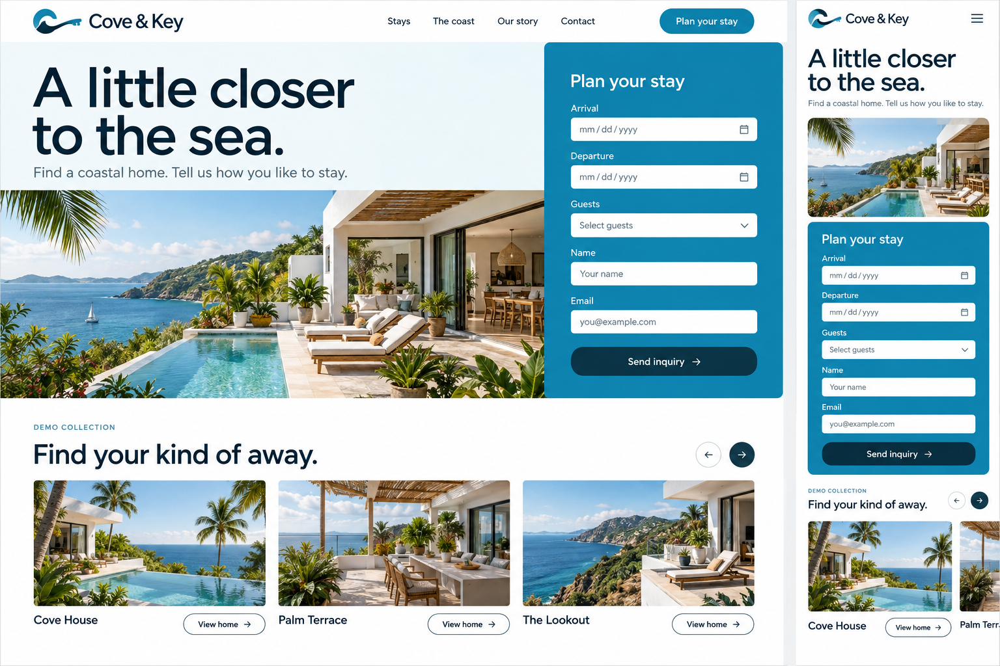
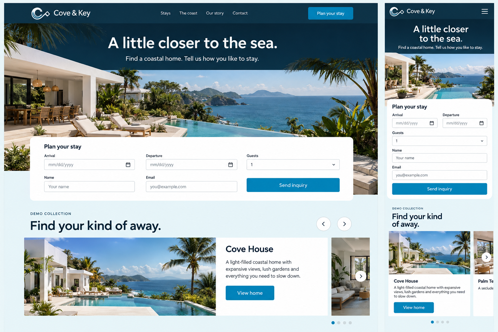
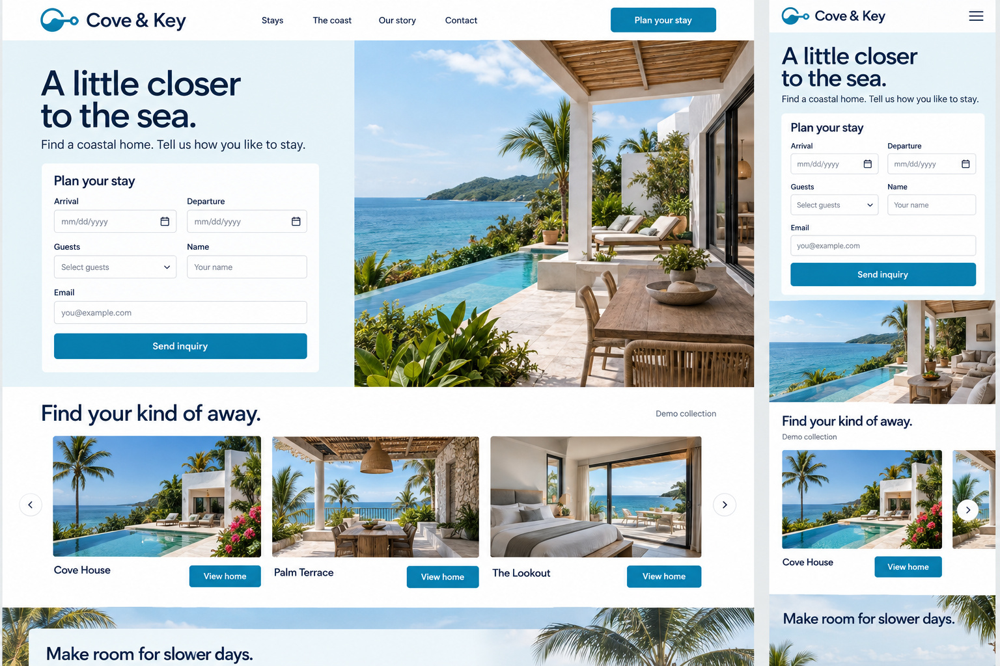

Cove & Key
Three directions for your Pagecraft vacation-rental template. Each concept shows the desktop and mobile hero inquiry form, followed by a property slider.
Visual concepts only. These images are not working pages or final logo masters. The selected direction will become native Pagecraft pages, with individual property pages, booking widgets, destination content, reviews and repeated calls to action.
A · Open Cove
Recommended. A prominent blue inquiry panel beside the headline and coastal photograph. The strongest balance of destination appeal and a clear inquiry action.

B · Horizon Club
A centered panoramic opening, wide inquiry form, and a carousel that gives each property more room to tell its story.

C · Stay Finder
Trip planning comes first. A compact inquiry form sits high in the hero, next to a tall property photograph; on mobile, the form precedes the photograph.
